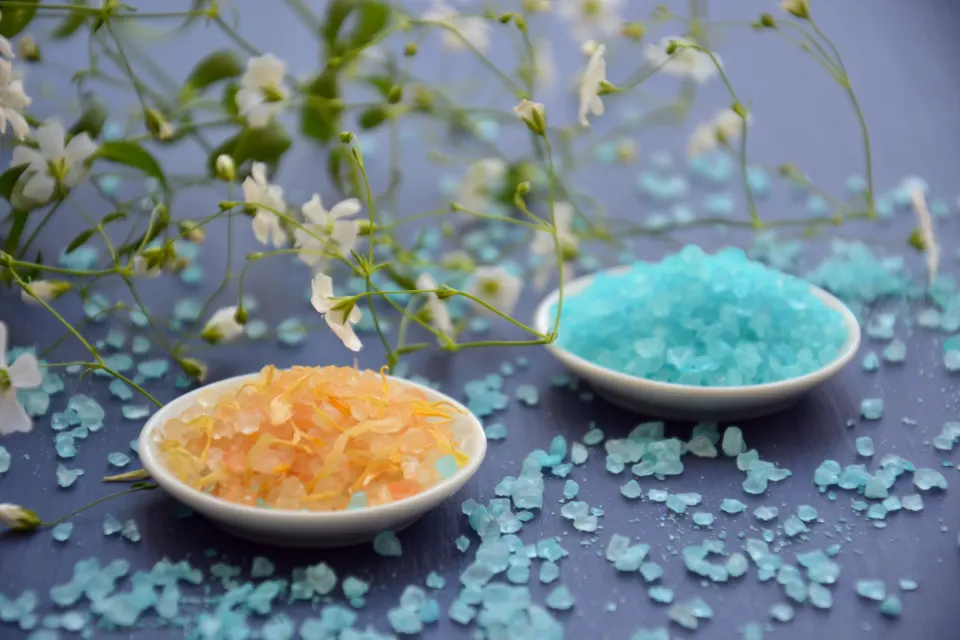
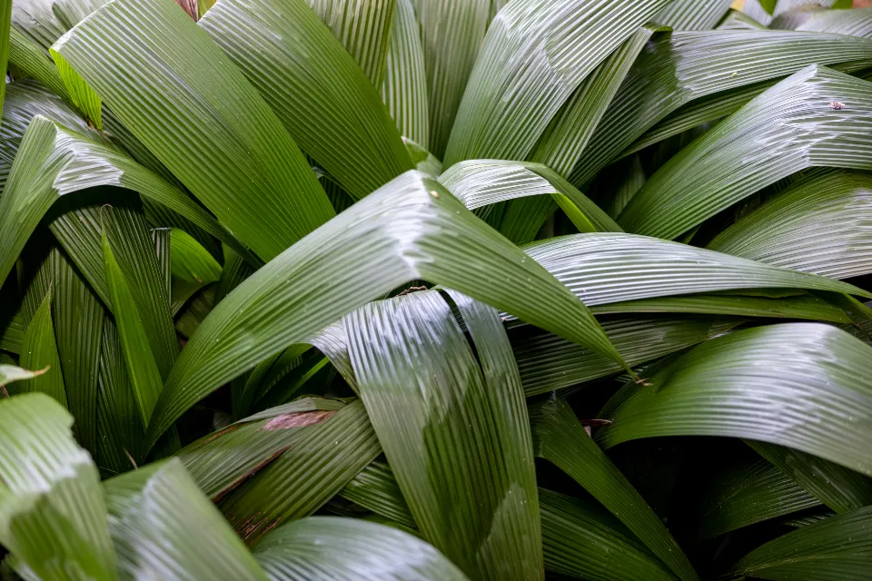
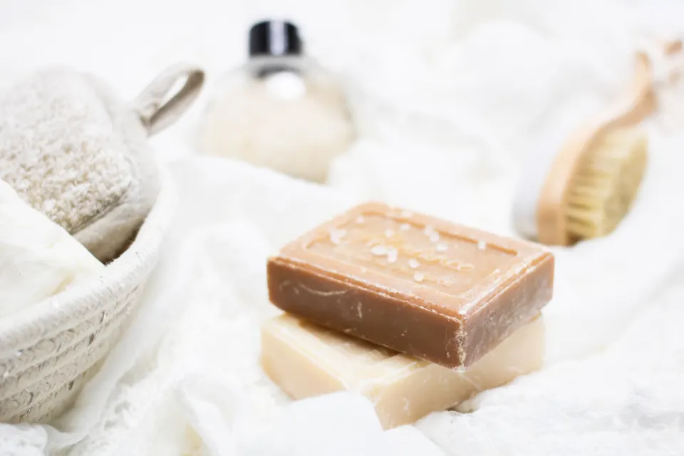

01
Nails
Shape, tidy and color for the fingernails.
- Nails
Nail salon · Tempe, Arizona
Thinking about your nails, a pedicure, waxing?
NuTrends Nails & Spa is a nail salon on South Rural Road in Tempe, Arizona, listing three services: nails, pedicures and waxing.


Illustrative photos
Nails for the hands, pedicures for the feet and waxing: NuTrends Nails & Spa lists three services at its salon on South Rural Road in Tempe.
What we do
Shape, tidy and color for the fingernails.
Nail care and polish for the feet.
Hair removal with warm wax.

Shape. Polish. Smooth.
Nails, pedicures and waxing in Tempe.
Illustrative photo
How to start
Choose nails, pedicures or waxing in the message helper below.
Mention a color, a nail shape or the area for waxing, then copy the text.
Paste it into a message to NuTrends Nails & Spa on Facebook and talk through the details with them.

Contact
You can reach NuTrends Nails & Spa through their Facebook page. Use the helper to write your message, then paste it there.
4427 S Rural Rd, Suite 1, Tempe, AZ 85282
Pick what you need. Nothing is sent from this page: you copy the text and paste it on Facebook.